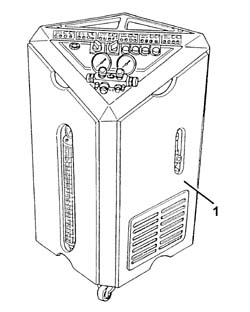
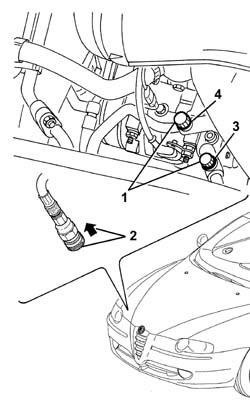
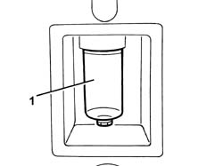

0010T84 coolant for air conditioning system dehydrate and recharge
- Path
- Procedures > 00 MAINTENANCE > 0010 NEW UNITS AND PLANNED MAINTENANCE'. > 0010T vehicle oil and fluids > 0010T84 coolant for air conditioning system dehydrate and recharge
- Kind
- repair procedure (removal / refitting; the operation number is the code)
- Applies to
- engines: 1.6 TS, 2.0 TS; all production periods
- Interactive page
- https://sloeber94.github.io/elrnDB-a147/en/#/3024733
Applies to: engines: 1.6 TS, 2.0 TS; all production periods
1. Using the special draining/repressurizing equipment.

Applies to: engines: 1.6 TS, 2.0 TS; all production periods
Let the engine run with the air conditioning switched on for 10 - 15 minutes.
1. Undo the repressurizing valve plugs.
2. Before attaching the connectors to the needle valves, move the knurled ring nut upwards.
3. Connect the high pressure connecting pipe (HIGH) to the corresponding rapid attachment valve.
4. Connect the low pressure connecting pipe (LOW) to the corresponding rapid attachment valve.

Applies to: engines: 1.6 TS, 2.0 TS; all production periods
Start the procedure for draining the coolant fluid, following the instructions in the equipment manual.
1. Whilst draining the system, the fluid removed from the compressor should be collected in a special container.

Applies to: engines: 1.6 TS, 2.0 TS; all production periods
Refill the system with the same amount of recommended fluid shown on the container.
 | Type | Component | Name | Qty. |
|---|---|---|---|---|
- | Oil | AIR CONDITIONER ASSEMBLY COMPRESSOR | SP 10 | - |
If certain components are replaced, the following quantities of fluid must be added for each of the components replaced:
Drier filter, 15 cm3
Pipes, 5 cm3/m
Evaporator, 40 cm3
Condenser, 40 cm3
In the case of accidental breakages which result in the rapid draining of the system (in less than 5 minutes), it is not possible to determine the exact amount of fluid which has escaped because of the high pressure of the fluid. Add 50 cm3 of fluid
Start the coolant fluid repressuring procedure, following the instructions in the equipment manual.
Introduce the recommended quantity of coolant fluid.
| Type | Component | Name | Qty. |
|---|---|---|---|---|
- | Fluid | Air conditioning circuit | R134a | 525 - 575 g |
In the case of damage to the compressor or other system components followed prolonged exposure to the air of the pipes (more than 6 hours), the system 'WASHING' procedure has to be carried out, proceeding as follows.
Clean the pipes connected to the compressor using an air line.
Connect the (now drained) system to the repressurizing equipment.
Introduce the recommended quantity of coolant fluid at the high pressure side.
Recover the coolant fluid from the low pressure side.
Repeat the introduction and recover the fluid.
Proceed with the system draining and repressurizing operations as described previously.
Refill the system with the recommended amount of fluid.
| Type | Component | Name | Qty. |
|---|---|---|---|---|
- | Oil (cm) | Air conditioning circuit | SP 10 | 130 |
Topics that link to this page (11)
- 3330D11 brake servo - r r including seperation from master cylinder - facia lining removed for rhd version
- 5040A10 Air conditioning refrigerant CIRCUIT - Draining and Refilling
- 5040A40 air conditioner condenser - r+r
- 5040A44 air conditioner dehydrating filter/accumulator - r+r
- 5040A50 pipe from compressor to air conditioner condenser - r+r
- 5040A60 pipe from condenser to evaporator (expansion pipe) - r+r
- 5040A64 pipe from evaporator to dehydrating filter/accumulator - r+r
- 5040A73 compressor inlet pipe - r r
- 5040A76 tandem pipe for delivery and return from evaporator rr
- 5040B30 expansion valve (tube orifice) - r+r
- 5040C15 air conditioner housing - r r with facia disconnected for versions with passenger airbag